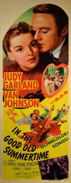

From my Facebook archives, September 14, 2015:
It had been a few months since we had seen a new (for us) Judy Garland film. The drought finally ended a couple weeks back with In The Good Old Summertime. Our expectations were fulfilled, as it was a very enjoyable movie with good music and performances.
It doesn't have any big production numbers, but Judy singing is quite a production by itself. And it does have one of my all-time favorite of Judy's performances in her song-and-dance to "I Don't Care," which I had seen clips of earlier and was eagerly anticipating.
In The Good Old Summertime is a 1949 Technicolor MGM musical re-make of the 1940 non-musical Ernst Lubitsch comedy The Shop Around The Corner. Judy and Van Johnson star, taking the roles of Margaret Sullivan and James Stewart. The setting has been moved to a music store in turn-of-the-century Chicago. But many of the characters, sets, and scenes are eerily reminiscent of the earlier film. It's been 2-3 years since we watched The Shop Around The Corner but at times Van Johnson seemed to me to morph into Jimmy Stewart. This is not a bad thing; the Lubitsch version was excellent.
Alas, Judy would only complete one more film at MGM (Summer Stock with Gene Kelly) before her troubles led to her departure from the studio where she had worked since she was 13. and her long road of tremendous ups-and-downs over the remaining twenty years of her life.